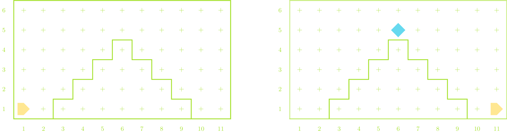

Section 1—Karel the Robot
Eric Roberts and Jed Rembold
Week of September 4, 2023
Problem 1
- Consider the following Karel program:
|
import karel
def mystery():
for i in range(4):
while front_is_clear():
put_beeper()
move()
turn_left()
|
- What does this program do in an empty world with
Karel facing east in the lower left?
- What might be a good name for this function?
- What would be a useful docstring comment?
- Can you use functions we have already written to
decompose this problem?
Tracing the Mystery Function
A Buggy Attempt to Reuse Code
Problem 2
- Write a program that teaches Karel to climb a “stair-step”
mountain of any size, placing a beeper at the top to mark the summit.
For example, your program should be able to generate the following
before-and-after pictures:

- If you knew in advance that there were exactly four
steps, you could use a for statement to repeat
the statements required for each step.
In the general case, however, you have to figure out how Karel can
determine when it reaches the summit and how it can detect that it has
reached the ground.